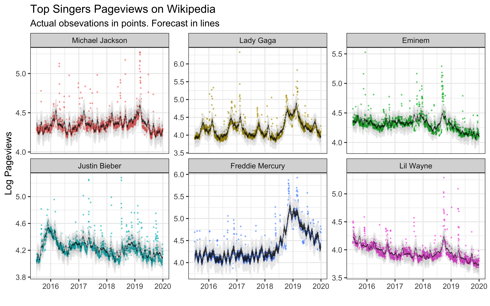
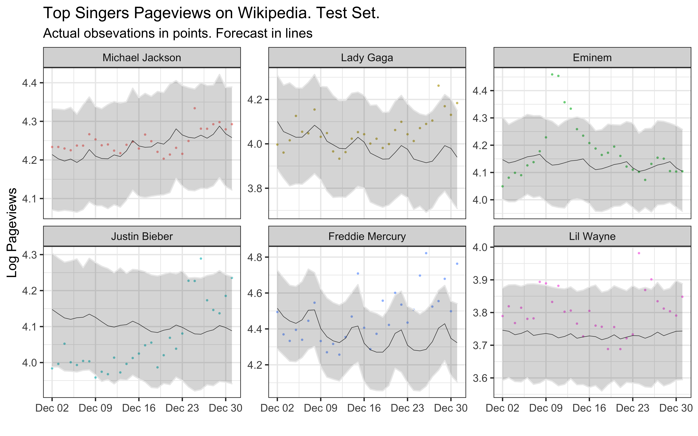

Prophet, or “Facebook Prophet,” is an open-source library for univariate (one variable) time series forecasting developed by Facebook. Prophet implements what they refer to as an additive time series forecasting model, and the implementation supports trends, seasonality, and holidays.
We will use a dataset of daily pageviews of the six most popular singers on Wikipedia.
Get the data here.
Inspect the data.
head(data)## # A tibble: 6 x 7
## Date `Michael Jackso… `Lady Gaga` Eminem `Justin Bieber`
## <date> <dbl> <dbl> <dbl> <dbl>
## 1 2015-07-01 19972 8465 23193 11212
## 2 2015-07-02 19225 8209 37222 11419
## 3 2015-07-03 18813 7855 26665 10973
## 4 2015-07-04 19003 8037 21772 10816
## 5 2015-07-05 19765 8879 21131 10737
## 6 2015-07-06 20621 8187 21407 11675
## # … with 2 more variables: `Freddie Mercury` <dbl>, `Lil Wayne` <dbl>This dataset has one column per singer. We have to tidy and split the data into the different singers to predict pageviews individually.
timeseries <- data %>%
pivot_longer(`Michael Jackson`:`Lil Wayne`,
names_to = "singer",
values_to = "y") %>%
mutate(ds = as_date(Date)) %>%
select(ds,singer,y) %>%
arrange(singer,ds)
timeseries## # A tibble: 9,870 x 3
## ds singer y
## <date> <chr> <dbl>
## 1 2015-07-01 Eminem 23193
## 2 2015-07-02 Eminem 37222
## 3 2015-07-03 Eminem 26665
## 4 2015-07-04 Eminem 21772
## 5 2015-07-05 Eminem 21131
## 6 2015-07-06 Eminem 21407
## 7 2015-07-07 Eminem 20295
## 8 2015-07-08 Eminem 19430
## 9 2015-07-09 Eminem 19640
## 10 2015-07-10 Eminem 20128
## # … with 9,860 more rowsTransforming our target variable to log pageviews will help predictions and visualization.
timeseries$y <- log10(timeseries$y)Transform the feature singer to a factor and modifying the levels, so I can override the default alphabetical ordering.
timeseries <- timeseries %>%
mutate(singer = factor(singer,levels = c("Michael Jackson" ,
"Lady Gaga","Eminem",
"Justin Bieber" ,
"Freddie Mercury",
"Lil Wayne")))We can visualize the time series facet wrapping by singer to get individual trends.
timeseries %>%
ggplot(aes(ds,y,color = singer) ) +
geom_line()+
facet_wrap(~ singer, scales = "free_y") +
scale_color_brewer(palette = "Set2") +
labs(title = "Top Singers Pageviews on Wikipedia",
y = "Log Pageviews", x = "")To forecast individual singer, we are spliting their data. We will also set the last 30 days as our test dataset.
timeseries_split <- timeseries %>%
split(.$singer)
timeseries_test <- map(timeseries_split,~slice_tail(.,n = 30))
timeseries_train <- map(timeseries_split,~slice_head(.,n = nrow(timeseries_split[[1]])-30))We fit the model, create a future dataset, and forecast 30 days into the future.
models <- timeseries_train %>% map(~ prophet(.))
future_datasets <- models %>% map( ~ make_future_dataframe(.,periods = 30,freq = "day"))
forecast <- map2(models,future_datasets,predict)forecast_tidy <- forecast %>%
do.call(rbind,.) %>%
mutate(singer = word(rownames(.),1,sep = "\\.")) %>%
left_join(timeseries, by = c("singer","ds")) %>%
mutate(singer = factor(singer,levels = c("Michael Jackson" ,
"Lady Gaga","Eminem",
"Justin Bieber" ,
"Freddie Mercury",
"Lil Wayne")),
test = ifelse(ds > (max(ds) - days(30)),1,0))forecast_tidy %>%
ggplot(aes(x = ds, group = singer,color = singer )) +
geom_point(aes(y = y), size = 0.3,alpha = 0.5) +
geom_line(aes(y = yhat),alpha=0.8, color = "black",size = 0.2) +
geom_ribbon(aes(ymin = yhat_lower,
ymax = yhat_upper),color = "grey92",alpha=0.2)+
facet_wrap(~ singer, scales = "free_y") +
labs(title = "Top Singers Pageviews on Wikipedia",
subtitle = "Actual obsevations in points. Forecast in lines",
y = "Log Pageviews", x = "")
In the test dataset, each singer’s mean absolute error is:
forecast_tidy %>%
filter(test == 1) %>%
mutate(diff = yhat - y) %>%
group_by(singer) %>%
summarise(mae = mean(abs(diff),na.rm = TRUE))## # A tibble: 6 x 2
## singer mae
## <fct> <dbl>
## 1 Michael Jackson 0.0280
## 2 Lady Gaga 0.0882
## 3 Eminem 0.0733
## 4 Justin Bieber 0.103
## 5 Freddie Mercury 0.151
## 6 Lil Wayne 0.0768forecast_tidy %>%
filter(test == 1) %>%
ggplot(aes(x = ds, group = singer,color = singer )) +
geom_point(aes(y = y), size = 0.3,alpha = 0.5) +
geom_line(aes(y = yhat),alpha=0.8, color = "black",size = 0.2) +
geom_ribbon(aes(ymin = yhat_lower,
ymax = yhat_upper),color = "grey92",alpha=0.2)+
facet_wrap(~ singer, scales = "free_y") +
labs(title = "Top Singers Pageviews on Wikipedia. Test Set.",
subtitle = "Actual obsevations in points. Forecast in lines",
y = "Log Pageviews", x = "")
forecast_tidy %>%
filter(test == 1) %>%
na.omit() %>%
mutate(diff = abs(yhat - y)) %>%
ggplot(aes(ds,diff)) +
geom_line(color = "red",alpha = 0.5) +
facet_wrap(~ singer) +
labs(title = "Absolute error by day",
y = "Abs Error of Log Pageviews")The models are basic and they seem to miss the big spikes and change in trends. To improve the model, we should include big events on each of the singer’s life (For example, new releases of albums or music videos).